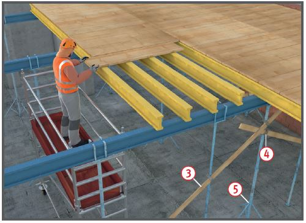

Fehlende Sicherungsmaßnahmen beim Auf-, Um- und Abbau sowie mangelhaft ausgebildeter Seitenschutz können bei der Verwendung zu Absturzunfällen führen.
Überlastung von Stützen und Schalungsträgern, unzureichende oder fehlende Aussteifungen können zum Einsturz der Schalungskonstruktion führen.
Allgemeines
Auf- und Abbau nur unter ständiger Aufsicht einer fachkundigen Person und von fachlich geeigneten Beschäftigten ausführen lassen.
Die Beschäftigten müssen in den Umgang mit dem jeweiligen Schalsystem unterwiesen sein.
Die Schalung/Tragkonstruktion muss so entworfen und bemessen werden, dass alle einwirkenden Lasten in den Untergrund oder in eine tragfähige Unterkonstruktion abgeleitet werden.
Entwurf und Bemessung sollten darauf abgestellt sein, dass die Schalung/Tragkonstruktion auf der Baustelle überprüft werden kann.
Beschädigte Bauteile nicht verwenden.
Vom Unternehmer ist eine Betriebsanweisung zu erstellen, anhand derer die Beschäftigten zu unterweisen sind.
Schutzmaßnahmen
Absturzsicherung
Je nach Bauart der Schalungskonstruktion und der baulichen Gegebenheiten sind Maßnahmen gegen Absturz zu treffen.
Schalsysteme, die vorwiegend unter Verwendung von PSAgA aufgebaut werden müssen, sind nachrangig zu Schalsystemen mit verringerter Absturzgefährdung , auszuwählen.
Bei der Verwendung von PSAgA hat der Unternehmer ein Rettungskonzept zu erstellen.
Der Unternehmer oder der fachlich geeignete Vorgesetzte hat geeignete Anschlageinrichtungen und -möglichkeiten festzulegen und dafür zu sorgen, dass die PSAgA verwendet wird.
Beschäftigte mit praktischen Übungen in die Verwendung und Rettung unterweisen.
Stützenunterbau
Stützen auf tragfähigem Untergrund aufstellen.
Bei Gefahr des Einsinkens lastverteilende und unverrückbare Unterlagen benutzen.
Mehrlagige Kantholzunterlagen nur kreuzweise und kippsicher ausführen.
Unterlagen, die höher als 40 cm sind, müssen statisch nachgewiesen werden.

Ausziehbare Baustützen aus Stahl
Stützen mit der Fußplatte vollflächig aufstellen.
Anschluss der Aussteifungsverbände nur mit Verschwertungsklammern oder Gerüstkupplungen herstellen.
Aufstellhilfen für Stützen nicht als Ersatz für die erforderlichen Aussteifungen verwenden.
Ausziehbare Baustützen aus Stahl müssen der DIN EN 1065 entsprechen oder bedürfen einer allgemeinen bauaufsichtlichen Zulassung.
Schalungsträger
Schalungsträger nur auf Mauerwerk auflegen, wenn dieses mindestens 24 cm dick und ausreichend tragfähig ist (Mindestdruckfestigkeit der Steine in den oberen drei Schichten 6 MN/m2, Mörtelgruppe II).
Schalungsträger vor der Plattenbelegung durch Einbauteile nach A+V des Herstellers gegen Kippen sichern.
Ausschalen
Bauteile erst ausschalen, wenn der Beton ausreichend tragfähig ist. Ausschalfristen beachten.
Bei größeren Stützweiten Hilfsstützen in erforderlicher Anzahl vorsehen.
Erschütterungen beim Ausschalen vermeiden.
Schalelemente nicht mit Kranen losreißen.
Lagerung
Schalelemente und Stützen gegen Umstürzen sicher lagern.
Verkehrs- und Fluchtwege von abgelagertem Schalungsmaterial freihalten.